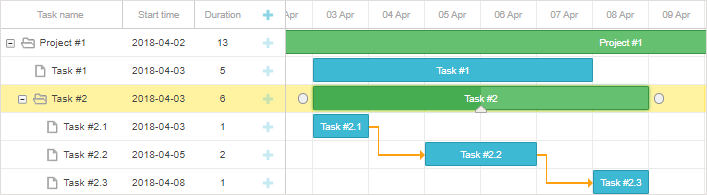
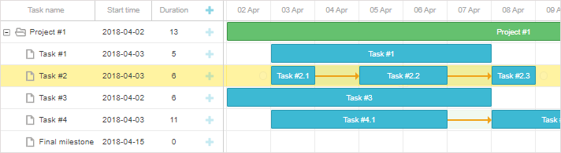
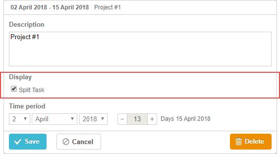
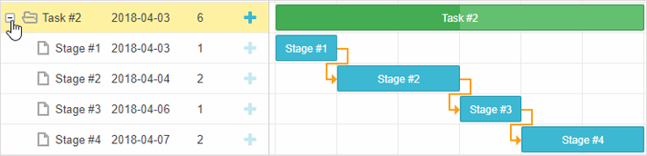

Available only in PRO Edition
This functionality is available in the PRO edition only.
In case you have a large task which is not continuous and can be interrupted, you can divide it into several parts. There can be as many parts, as it's required.
At the data level, such tasks can be represented as a summary task (project) with subtasks, where each subtask defines an isolated part of the main task.

Which you can display in one row, as a single task:

To display a project as a split task, you need to set its render property to split:
{id: 1, text: "Task #2", start_date: "03-04-2018 00:00", type: "project",
render:"split", parent: 0}, {id: 2, text: "Task #2.1", start_date: "03-04-2018 00:00", duration: 1,
parent: 1},
{id: 3, text: "Task #2.2", start_date: "05-04-2018 00:00", duration: 2,
parent: 1},
{id: 4, text: "Task #2.3", start_date: "08-04-2018 00:00", duration: 1,
parent: 1}
The task "Task#2" is split and rendered as a set of tasks: "Task#2.1", "Task#2.2" and "Task#2.3", which are fully interactive.
To show a split task in its typical tree mode, i.e. as a project with subtasks, you just need to change the value of the task.render property and re-render gantt:
// repaint task in the 'split' mode
task.render = "split";
gantt.render();
// repaint task in the regular (tree) mode
task.render = "";
gantt.render();
For instance, it is possible to add a control mapped to the task.render property into the lightbox to dynamically switch between the split and hierarchical views. Check an example in the section below.
You can configure the lightbox so that it allows switching the split mode for the task on and off. For this you can add a new section with a checkbox into the lightbox by changing configuration settings for project types of tasks - gantt.config.lightbox.project_sections and add a label for the new section:
gantt.locale.labels.section_split = "Display";
gantt.config.lightbox.project_sections = [
{name: "description", height: 70, map_to: "text", type: "textarea", focus: true},
{name: "split", type:"checkbox", map_to: "render", options:[
{key:"split", label:"Split Task"}
]},
{name: "time", type: "duration", readonly: true, map_to: "auto"}
];
The result will look like this:

When the checkbox will be unchecked, a split task will be rendered as a project with subtasks.
You can check whether a task is split with the help of the isSplitTask method. It takes the task object as an argument and returns true, if the task is split.
var task = gantt.getTask(1);
if(gantt.isSplitTask(task)){
...
}
In case you want to expand/collapse a split task right from the grid interface, there is a special configuration option that will help you. It is called open_split_tasks and it takes a boolean value to make a split task expandable and otherwise.
gantt.config.open_split_tasks = true;

Back to top